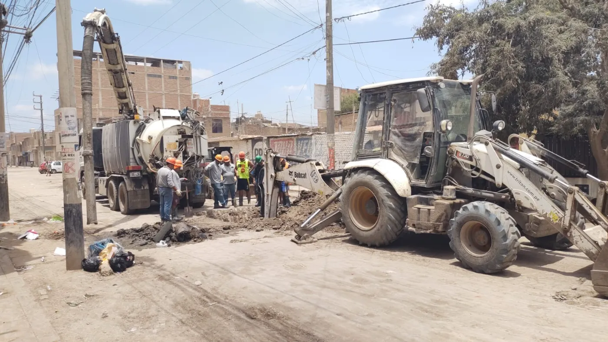

Cortes y avisos
Los comunicados de EPSEL en texto: dónde se corta el agua, por qué, hasta cuándo y qué hacer. Elige tu localidad para ver solo lo tuyo.

Ver avisos de
Todas las localidades.
Vigentes hoy
Hoy
Cargando los avisos…
Próximos días
Comunicados publicados por EPSEL entre el 29 de octubre y el 5 de noviembre de 2026. En el sitio actual son imágenes; aquí están en texto para que se puedan leer en voz alta, buscar y filtrar.
Qué quiere decir cada aviso
- Corte de agua
No saldrá agua del caño en ese horario o hasta nuevo aviso.
- Trabajos en la red
Obras en tuberías o desagüe; puede haber cortes cortos.
- Horario por turnos
El agua llega solo en ciertas horas del día.
- Sin avisos
El servicio es normal en tu localidad.
Antes de un corte
Guarda agua la noche anterior
Llena baldes con tapa y tu tanque. Calcula unos 20 litros por persona para tomar, cocinar y asearse.
Cierra la llave de paso
Así no entra aire ni tierra a tu tubería cuando vuelva el agua.
Deja correr el agua al volver
Abre el caño unos minutos hasta que salga clara antes de usarla para tomar.
¿Se fue el agua y no hay aviso?
Puede ser una fuga o una avería. Avísanos para mandar una cuadrilla.